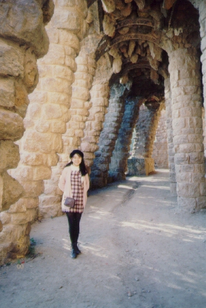

スペイン旅行２・バルセロナ (96.1)
ガウディパークで

|
バルセロナの町のあちこちにガウディの作品といわれる家があり、素人の私にさえわかるくらい、他とは違うイメージを受けます。ですから、私と一緒にまわった女性、Ｋさんのような建築家や建築家の卵もたくさんここに訪れるようです。たぶん彼らにとっては感動もひとしおなのではないでしょうか。 さて、どの写真を出そうか迷ったのですが、またまたガウディパークで撮った写真にしました。ガウディは世界的に有名な建築家だと思いますが、確かに行ってみるとどこか一味違う感じがしました。壮大というか。。しょう乳洞のように自然にできたものという感じがするのですが、やっぱり『自然』とは違うのです。 このガウディパークは、最初は住宅街を目指して、ガウディに依頼がいったそうです。でも、その場所はバルセロナの市街からは遠く、人々の感心はなく、出来上がった時に住むことにしたのはその依頼者だけだったそうです。そしてしばらくして、公園になったのですが、公園にして正解だったのかもしれません。バルセロナ一帯を見晴らせる場所にあるため、見晴らしもよく、木や草も生い茂り、植物園のような印象の中にガウディの大きな作品が点在していて、楽しかったです。 ただし、素人の私にはこれくらいしか感想はありません。(^^;、、 気候は１月だというのにとても暖かく、私の用意したセーターはほとんど着る場所はありませんでした。でも雨季にあたるらしく、しょっちゅう雨がパラパラ降っていました。私は雨が好きなので、生き返ったような気分でした。 ３日間、Ｋさんと一緒にまわり、建築について簡単に解説してもらえたのはラッキーでした。ホテルが別々なので、夕方４時くらいに一度彼女と別れてそれぞれのホテルに戻ります。そしてスペインでは８時くらいにならないとレストランが開かないので、それまでしばらく休憩です。歩いて１分くらいのところに海があるので（といっても海岸じゃありません）、散歩しました。 ２日めにそこでフレッドというフィリピン人の男性に会い、しばらくおしゃべりしました。彼は水夫で世界中をまわるのが好きで、どうしても一個所には落ち着けないそうです。だから結婚は向かないそうです。彼は３人兄弟だそうですが、全員水夫なので、「これは血筋だ」と笑っていました。私と同じくらいの年だったのですが、自分のことをきちんとわかっているようでうらやましくなりました。私なんてまだまだふらふらしているからなぁ。。 私はずっと体調が悪かったこともあり、ほとんどきちんと食事はしていませんでした。スペインには、Bar（バル）というお店がたくさんあり、これはコーヒーショップのようなところで（バーじゃありません(^^;）、ここで朝食をとっていたくらいです。クロワッサンとカフェコンラッテ(Cafe con leche)がとてもおいしかったのを覚えています。私はほとんどこの組み合わせでした。夜は、そこらへんの市場で何かを買って、ホテルに持ち込み適当に一人で食べていました。（暗いなぁ。。） これはスペイン語が全くわからず、注文ができなかったせいでもあります。スペインの人たちは、親しみやすくよく話し掛けてもくれるのですが、英語は全く通じず、片言もスペイン語がしゃべれない私には助けにはなりませんでした。が、なんとＫさんはアメリカの帰国子女で英語はぺらぺら、スペイン語もかなりしゃべれたので、彼女がいろいろな注文や説明をしてくれて、この３日間で、私は本当の観光客になれたように楽しむことができました。 この時入ったレストランで、私達はパエリアを食べました。マドリッドで食べた時は あまりおいしいとは思わなかったのだけど、ここのは全然違う。パンはカタロニア風といって、トーストにガーリックをすりこみ、トマトをすりこんだ上にオリーブ油をかける。デザートのクレマ・カタローニャというのは、プリンの甘くしたものにお砂糖をかけて焼き冷ましたもの。 |

=スペイン旅行２（ガウディパーク）(96.1)=
|
さて、ガウディパークは小高い丘の上にある熱帯園というイメージなのですが（もしかしたら私だけの感覚かもしれませんm(_ _)m）、一応道順みたいなものがあり、その通路（道）を歩いて行くと、あちこちにガウディの作品を見ることができます。前回だした写真のように、大理石みたいな石に色をつけたものがあちこちにあったかと思うと、このように見た目は質素で壮大なイメージの通路があったりと見る人の気持ちを楽しませてくれます。 ということで、今回はほとんど写真と関係ない話題になってしまいました(^^ゞ。でもＫさんと出会えた３日間のおかげで、私はスペイン観光（？）ができたし、おいしいものを食べることもできた。彼女はイギリスへ留学中なので、そのままイギリスへ帰って行きました。これから最後までの３日間、また私の一人旅は続きます。。 |
[ホームへ] [写真一覧へ]